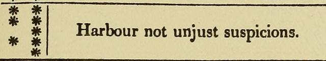

|
“Will my Beloved prove true in my absence?”
In plain words: when I’m not there, will he stay true?
It’s an old question. We still ask it.
When he’s away for work. When he’s running late. When he goes quiet, and you can’t tell why.
And the mind goes straight to the worst.
It’s question 17 in The Book of Fate, a fortune book from London, 1822.
It claimed Napoleon once owned it. Historians say that’s made up. It’s free to read online now.
Here’s how it worked. You picked your question from a list of 32. Then you scribbled five rows of quick little lines. No counting allowed. Each row became one star or two, odd or even, and your stars sent you to one answer.
The translator added a rule of his own. Only one question a day. And never the same question twice in one month.
Once a month! Some of us ask that one twice before breakfast.
So I turned to question 17. There are 32 possible answers, one for each pattern of stars. I was expecting a yes or a no.
One of them is neither. It’s four words long:
“Harbour not unjust suspicions.”

The Book of Fate, folio 9 (London, 1822).
Scan: Library of Congress, 1923 facsimile (public domain)
To harbour something means to give it a safe place to stay. Like a boat tied up in a harbour.
Now read it again, slowly.
It doesn’t say “harbour no suspicions.” It doesn’t say “trust him no matter what.” It says don’t keep the unjust ones. The unfair ones.
So the old writer knew something. Some doubts are fair.
That’s the book’s rule, and I’d keep it. Here’s how I tell the two kinds apart.
A fair doubt has a reason, and he gave it to you. He says he’ll call tomorrow. Then tomorrow keeps not coming. Noticing that isn’t being jealous. It’s paying attention.
An unfair doubt got there before he did. He goes quiet one evening, and your stomach drops. But he’s always been the quiet type. That drop is older than him. Maybe it started with a man who went quiet right before he left.
From the inside, the two feel exactly the same. That’s what makes it so hard.
No one in your life right now? Think of the last man. Was your doubt about him fair? Or was it older than him?
The book gives you the rule. It can’t tell you which kind is yours.
Did your doubt start with him?
Evelyn, help me see which of my doubts are fair →
Tell me what’s been happening, and what your gut keeps saying. Or tell me about the last man. I won’t play detective. We’ll look at the doubt itself, together.
If you’ve ever been called “the jealous type,” or called yourself that, please hear this.
Doubt isn’t a flaw in you. For a lot of us, it’s a heart that got hurt once and learned to check the locks twice.
That makes sense. It was only trying to keep you safe.
But a doubt gets heavier every day you hold it alone.
Never talked with me before? Your first 3 minutes cost nothing.
The old book made you wait a month to ask again. You don’t have to wait at all.
Bring my doubts to Evelyn →
— Evelyn
P.S. Four words from 1822: “Harbour not unjust suspicions.” Notice what the book didn’t say. It never said you were wrong to wonder. Start here.
|